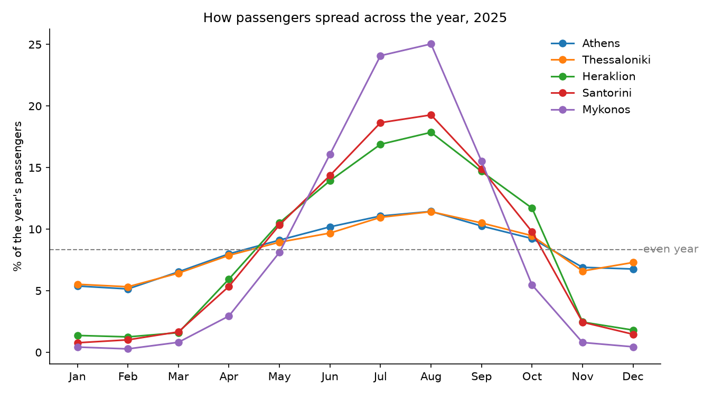

Greek Air Traffic
How much does each Greek airport depend on the summer season? An analysis of monthly passengers at 47 airports from 1999 to today. Island airports like Skiathos get 88% of their yearly passengers between June and September.
Data analysis · Jupyter · Eurostat data